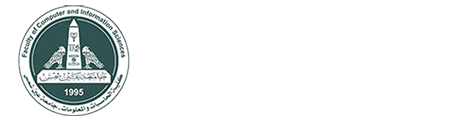
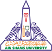
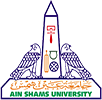
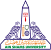

-
- تعريف : هو استخدام أحدث تقنيات الرياضيات التطبيقية، المعلوماتيةInformatics ، اإلحصاء، علوم الحاسب Science Computer لحل المشكالت البيولوجية الحيوية. فالمعلوماتية الحيوية هى من أحدث علوم الحاسب التي تهدف الى تحليل المعلومات البيولوجية باستخدام الكمبيوتر والتقنّايات الحديثة.هو العلم الذي يسعي الستخدام وتطوير قواعد البيانات والخوارزميات الحاسوبية لتطويع وتعزيز الابحاث البيولوجية
- مميزات و ايجابيات البرنامج :تميزالبرنامج بتقديم تعليم عالى الجودة فى تخصصات غير نمطية ونظام دراسى حديث يختلف تماما عن النظم والبرامج المتاحة بكليات الحاسبات والمعلومات ويمكن ايجاز ايجابيات البرنامج فيما يلى: هو برنامج متميز يساير أحدث االتجاهات العالمية فى تطوير التعليم وتحديثه حيث تتضمن المقررات الدراسية احدث المعلومات و التقنيات فى مجال تخصص تقنية المعلومات الحيوية وعلوم الحاسب التى تطابق ما يتم تدريسة فى كثير من الجامعات الرائدة على مستوى العالم مما يتيح للخريج فرصة استكمال دراستة بأحد هذه الجامعات بسهولة االرتباط بسوق العمل والتفاعل مع المجتمع وذلك بتحديد االحتياجات الالزمة فى مواصفات الخريج وادراجها بمحتويات المقررات الدراسية الكساب الطالب التقنيات والمهارات لمواكبة هذه االحتياجات.
-
مجاالت العمل : تتوافر لدى خريج كلية الحاسبات و المعلومات تخصص تقنية المعلومات الحيوية العمل فى المجاالت
التالية:
العمل فى وحدات تكنولوجيا المعلومات ووحدات األبحاث فى الهيئات والشركات العامة والخاصة وشركات
األدوية ومعامل الطب الشرعى وادارات وزارة الداخلية ووزارة الصحة ومعاهد البحوث والمستشفيات.
وذلك ألن الخريج تتوافرلدية المعرفة العلمية والعملية فى البرمجيات وأيضا تكنولوجيا المعلومات الحيوية.
العمل فى شركات البرمجيات التى تخدم المجاالت والتخصصات المختلفة التى يحتاجها سوق العمل.
تقديم اإلستشارات للهيئات والشركات ومراكز االبحاث ومجموعات العمل فى مجاالت التقنية الحيوية و
نظم المعلومات الطبية و البيئية بصفة خاصة و جميع مشكالت نظم و تكنولوجيا المعلومات بصفة عامة.
إتمام البحوث المختلفة المرتبطة بمجاالت المعلوماتية الحيوية وعلوم الحاسب.
القدرة على تأسيس شركات النتاج برمجيات تخصصية فى مجال تقنية المعلومات الحيوية ووضع حلول
لميكنة المؤسسات المختلفة الحيوية لغيرالمتخصصين بصفة خاصة وفى مجاالت نظم وتكنولوجيا
المعلومات بصفة عامة
-
- التعريف: تتوافر لدى خريج كلية الحاسبات و المعلومات تخصص تقنية المعلومات الحيوية العمل فى المجاالت التالية: العمل فى وحدات تكنولوجيا المعلومات ووحدات األبحاث فى الهيئات والشركات العامة والخاصة وشركات األدوية ومعامل الطب الشرعى وادارات وزارة الداخلية ووزارة الصحة ومعاهد البحوث والمستشفيات. وذلك ألن الخريج تتوافرلدية المعرفة العلمية والعملية فى البرمجيات وأيضا تكنولوجيا المعلومات الحيوية. العمل فى شركات البرمجيات التى تخدم المجاالت والتخصصات المختلفة التى يحتاجها سوق العمل. تقديم اإلستشارات للهيئات والشركات ومراكز االبحاث ومجموعات العمل فى مجاالت التقنية الحيوية و نظم المعلومات الطبية و البيئية بصفة خاصة و جميع مشكالت نظم و تكنولوجيا المعلومات بصفة عامة. إتمام البحوث المختلفة المرتبطة بمجاالت المعلوماتية الحيوية وعلوم الحاسب. القدرة على تأسيس شركات النتاج برمجيات تخصصية فى مجال تقنية المعلومات الحيوية ووضع حلول لميكنة المؤسسات المختلفة الحيوية لغيرالمتخصصين بصفة خاصة وفى مجاالت نظم وتكنولوجيا المعلومات بصفة عامة
- المميزات والايجابيات :برنامج جديد يساير أحدث االتجاهات العالمية فى تطوير التعليم يعتمد البرنامج على نظام الساعات المعتمدة تتضمن المقررات الدراسية أحدث المعلومات والتقنيات يستخدم في البرنامج طرق التعليم الحديثة التعلم الذاتى حلقات النقاش حل المشكالت واعداد التقارير العلمية وعرضها ومناقشتها.
-
- يهدف هذا البرنامج إلى إعداد خريجين لديهم القدرة على استخدام الوسائل التكنولوجية لمنع الإستخدام الغير مصرح به وسوء الإاستغلال وإستعادة المعلومات الإلكترونية ونظم الإاتصالات والمعلومات التي تحتويها وذلك بهدف تعزيز حماية وسرية وخصوصية البيانات الشخصية للمواطنين والمستهلكين من المخاطر في الفضاء السيبراني كما تمنح الكلية درجة بكالوريوس الحاسبات والمعلومات بالشراكة بين جامعة عين شمس وجامعة وليم بيترسون وكلية أوشن كانتري بالولايات المتحدة الامريكية في البرامج التخصصية لنظام الساعات المعتمدة
-
- يهدف هذا البرنامج إلى إعداد خريجين لديهم القدرة علي إنتاج تطبيقات يمكنها تخزين المعلومات بأشكال متنوعة تتضمن النصوص والصور والرسوم المتحركة والأصوات، ثم عرضها بطريقة تفاعلية وفقاً للإستخدامات المختلفة في مجالات الإعلانات والفن والتعليم والترفيه والمؤثرات الخاصة في الأفلام والرسوم المتحركة والألعاب.
-
- يهدف هذا البرنامج إلى إعداد خريجين لديهم القدرة علي برمجة الآلة لمحاكاة العقل البشري وطريقة عمله، مثل قدرته على التفكير والإكتشاف والإستفادة من التجارب السابقة. ويستخدم الذكاء الإصطناعي بنجاح في مجالات النظم الخبيرة ومعالجة اللغات الطبيعية وتمييز الأصوات وتمييز وتحليل الصور والتشخيص الطبي، وتداول الأسهم، والتحكم الآلي، وألعاب الفيديو ولعب الأطفال ومحركات البحث على الإنترنت وعلم تصميم الإنسان الحاسوبي.

 

